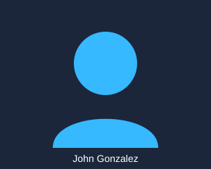
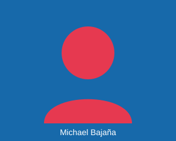

John Gonzalez
Cofundador & Desarrollador
Apasionado por la tecnología, el desarrollo web y las soluciones digitales innovadoras.
Somos TecnoNova, un proyecto enfocado en ofrecer soluciones tecnológicas modernas y accesibles para estudiantes, profesionales y hogares.

Cofundador & Desarrollador
Apasionado por la tecnología, el desarrollo web y las soluciones digitales innovadoras.

Cofundador & Desarrollador
Especialista en experiencia de usuario, diseño de interfaces y gestión de proyectos tec.